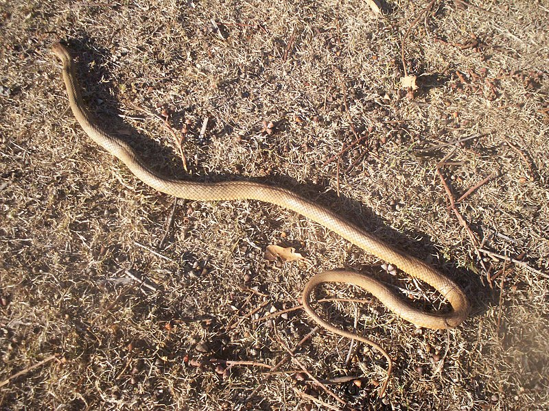
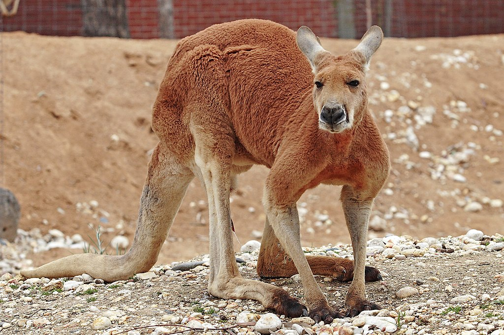
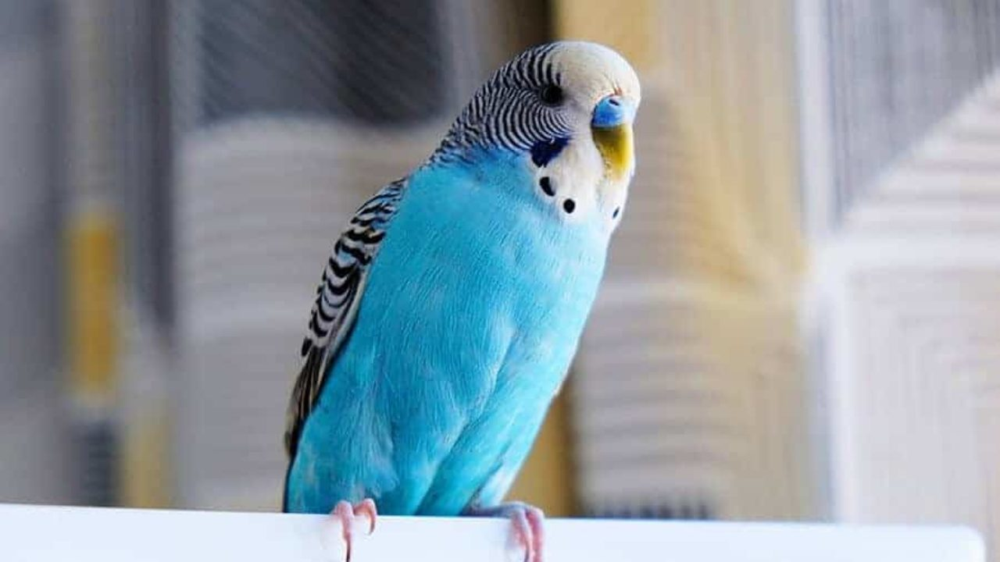
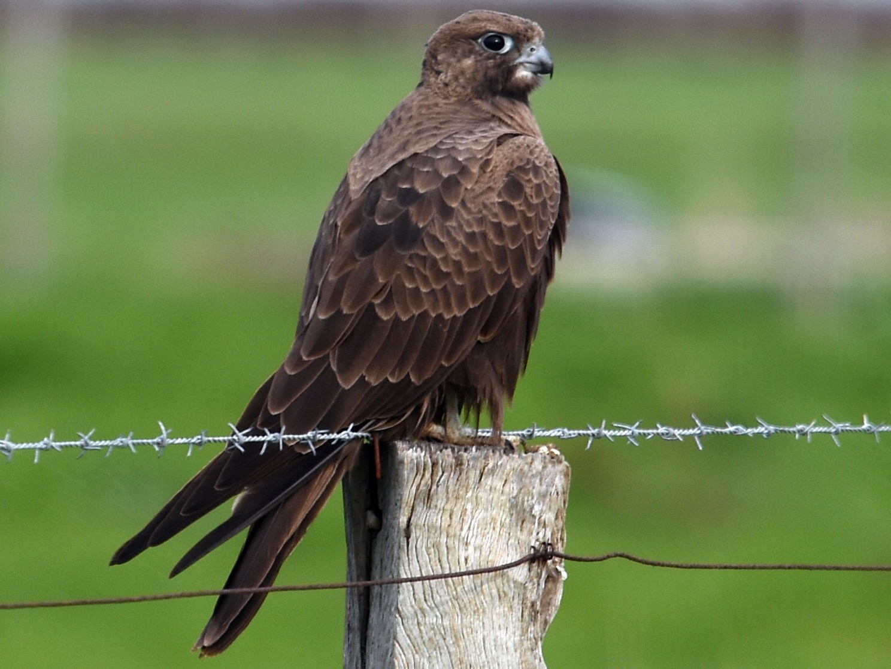

Olá.
Nesse site nos vamos falar sobre os animais da australia e curiosidades.
Animais
A cobra-marrom
a cobra-marrom e a segunda mais venenosa do mundo. Uma simples picada ataca o sistema nervoso,os rins e o coração para de bater. Muito perigoso, ne.

O inpressionante canguru-vermelho
o canguru-vermelho tem 1,5m de altura. 1,20 na cauda. pesa 90 kg. os machos [riso] brincam de lutinha. Os cangurus-vermelhos tem uma bousa chamada marsupio para guardar os filhotes. Os cangurus-vermelhos pulam 3m de altura. Os pes são muito grandes.

A Tempestade viva
Na australia,tem um animal chamado periquito-australiano. muitos deles mostram uma tempestade ,na verdade um tornado mais eles pousam aonde tem agua. Mais isso atrai varios predadores como o falcão-preto que pega os que ficam mais tempo


Geografia
- População: 20.325.926
- Religião:catolicos 26,4%
- anglicanos:20,4%
- protestantes:16,8%
- ortodoxos:2,8%
- capital:canberra
- Idioma:ingles
- Idioma:ingles
- Sidney:3.997.321
- Melboune:3.366.542
- Brisbane:1.627.535
- Perth:1.339.993
- Adelaide:1.072.585
- Moeda:dolar australiano
Animais florestais
Os fofinhos coalas
Os coalas são animais da Australia que são um pouquinho fofinhos mais eles tem um som um pouco estranho. Parece o som de alguem berrando com um tom mais alto. Isso atrai femeas e afasta inimigos. Ele tenta ficar com a femea e não consegue ele vai para outra arvore. Quando ele não consegue nenhuma vez ele procura um inimigo [esqueci de falar nesse tempo os coalas mudam de humor]. Quando ele quase termina de lutar o mais velho vence. Depois disso ele volta pro antigo objetivo depois de um tempo ele consegue o objetivo.